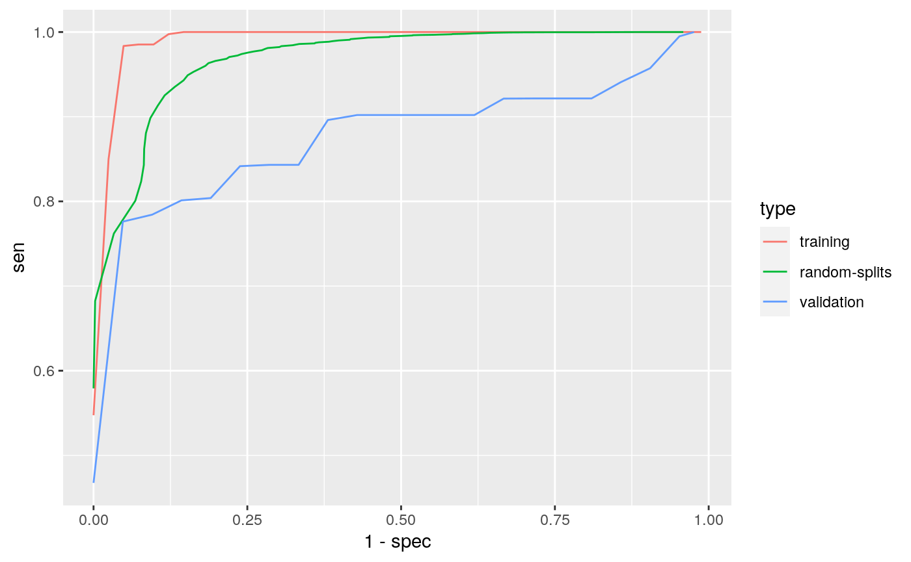

library(PheCAP)Load Data.
data(ehr_data)
data <- PhecapData(ehr_data, "healthcare_utilization", "label", 0.4, patient_id = "patient_id")
data## PheCAP Data
## Feature: 10000 observations of 587 variables
## Label: 119 yes, 62 no, 9819 missing
## Size of training samples: 109
## Size of validation samples: 72Specify the surrogate used for surrogate-assisted feature extraction (SAFE). The typical way is to specify a main ICD code, a main NLP CUI, as well as their combination. In some cases one may want to define surrogate through lab test. The default lower_cutoff is 1, and the default upper_cutoff is 10. Feel free to change the cutoffs based on domain knowledge.
surrogates <- list(
PhecapSurrogate(
variable_names = "main_ICD",
lower_cutoff = 1, upper_cutoff = 10),
PhecapSurrogate(
variable_names = "main_NLP",
lower_cutoff = 1, upper_cutoff = 10),
PhecapSurrogate(
variable_names = c("main_ICD", "main_NLP"),
lower_cutoff = 1, upper_cutoff = 10))Run surrogate-assisted feature extraction (SAFE) and show result.
system.time(feature_selected <- phecap_run_feature_extraction(data, surrogates))## user system elapsed
## 188.820 0.096 188.937feature_selected## Feature(s) selected by surrogate-assisted feature extraction (SAFE)
## [1] "main_ICD" "main_NLP" "NLP56" "NLP93" "NLP160" "NLP161"
## [7] "NLP306" "NLP403"Train phenotyping model and show the fitted model, with the AUC on the training set as well as random splits
model <- phecap_train_phenotyping_model(data, surrogates, feature_selected)
model## Phenotyping model:
## $lasso_bic
## (Intercept) main_ICD main_NLP
## 2.9385715 1.4945729 3.3069198
## main_ICD&main_NLP healthcare_utilization NLP56
## -2.8045580 -1.2310919 0.0000000
## NLP93 NLP160 NLP161
## -0.3141447 0.0000000 0.0000000
## NLP306 NLP403
## 0.0000000 0.0000000
##
## AUC on training data: 0.941
## Average AUC on random splits: 0.902Validate phenotyping model using validation label, and show the AUC and ROC
validation <- phecap_validate_phenotyping_model(data, model)
validation## AUC on validation data: 0.92
## AUC on training data: 0.941
## Average AUC on random splits: 0.902round(validation$valid_roc[validation$valid_roc[, "FPR"] <= 0.2, ], 3)## cutoff pos.rate FPR TPR PPV NPV F1
## [1,] 0.992 0.007 0.000 0.282 1.000 0.301 0.440
## [2,] 0.950 0.250 0.000 0.384 1.000 0.334 0.555
## [3,] 0.909 0.361 0.000 0.486 1.000 0.375 0.654
## [4,] 0.870 0.458 0.059 0.583 0.970 0.411 0.728
## [5,] 0.870 0.458 0.059 0.595 0.970 0.418 0.738
## [6,] 0.870 0.458 0.059 0.607 0.971 0.426 0.747
## [7,] 0.869 0.472 0.059 0.620 0.971 0.433 0.757
## [8,] 0.861 0.514 0.059 0.632 0.972 0.442 0.766
## [9,] 0.853 0.514 0.059 0.644 0.973 0.450 0.775
## [10,] 0.845 0.528 0.118 0.661 0.948 0.446 0.779
## [11,] 0.838 0.528 0.118 0.698 0.950 0.475 0.805
## [12,] 0.830 0.528 0.118 0.735 0.953 0.507 0.830
## [13,] 0.800 0.542 0.118 0.772 0.955 0.545 0.854
## [14,] 0.694 0.597 0.118 0.809 0.957 0.589 0.877
## [15,] 0.589 0.653 0.118 0.847 0.959 0.640 0.899
## [16,] 0.511 0.708 0.176 0.875 0.941 0.670 0.907
## [17,] 0.501 0.708 0.176 0.881 0.942 0.681 0.910
## [18,] 0.491 0.708 0.176 0.887 0.942 0.692 0.914
## [19,] 0.464 0.722 0.176 0.893 0.942 0.704 0.917
## [20,] 0.404 0.736 0.176 0.899 0.943 0.716 0.921
## [21,] 0.345 0.736 0.176 0.905 0.943 0.729 0.924phecap_plot_roc_curves(validation)
Apply the model to all the patients to obtain predicted phenotype.
phenotype <- phecap_predict_phenotype(data, model)
idx <- which.min(abs(validation$valid_roc[, "FPR"] - 0.05))
cut.fpr95 <- validation$valid_roc[idx, "cutoff"]
case_status <- ifelse(phenotype$prediction >= cut.fpr95, 1, 0)
predict.table <- cbind(phenotype, case_status)
predict.table[1:10, ]## patient_id prediction case_status
## 1 1 0.154521274 0
## 2 2 0.986655055 1
## 3 3 0.043015703 0
## 4 4 0.034496541 0
## 5 5 0.435714807 0
## 6 6 0.842739566 0
## 7 7 0.006126169 0
## 8 8 0.028935768 0
## 9 9 0.418866615 0
## 10 10 0.058719610 0